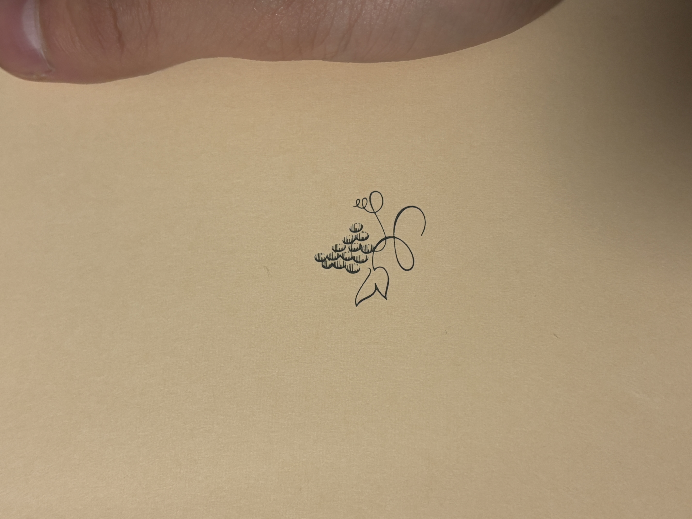

本棚がある。大量の文庫本が一列に並んでいる。カバーは全て剥かれている。本の背は全て橙色である。なので一冊に見える。私の腕ぐらいの長さである。彼の腕は私よりも長く。それに日焼けもしている。肌は汗で光沢を纏っている。天井には円形の照明がある。だから彼の腕に、丸い光が映り込んでいる。真夜中に露天風呂へ入った。岩肌を足裏に感じた。肩まで浸かったのは冬だったから。雲はなかった。ので星空と月が見えた。手で湯をかき混ぜた。丸い月は歪んだ。楕円に変形した。波紋に合わせて元の形に戻っていった。腕を水面から出した。湯を纏った私の腕に丸い月が映り込んだ。それは一冊に見える文庫本らと同じ長さである。けれど彼の腕は私より少し長く、だからさっき買った文庫本のカバーを剥いて本棚に入れる。文庫本らはもう私の腕の長さではなくなった。彼の腕は丸い光が映り込み、文庫本らと同じ長さである。「久しぶりじゃん」「久しぶりだね」「いつぶり？」「半年前かな」「そんなに」「アイス買ってきたから」「ありがとう、冷蔵庫に入れておく」「あとで食べる感じ？」「そう」彼は指を引っ掛ける。彼は手前に引っ張る。彼はアイスの入ったビニール袋を持ち上げる。彼は冷凍庫に入れる。彼は立つ。彼は足で冷凍庫のドアを押し込む。そして私の方を向いた。彼は私を愛していなかった。関係だけが間延びしていた。伸びた腕は本棚を触る。手で確かめたかった。指で本をなぞる。「半年前と本棚が一緒だね」「買わないから」「読むくせに？」「君が置いていくからでしょ」本を買った。近所の古本屋だった。適当に選んだ。だから興味が持てなかった。それは彼の部屋に置いていくためだから、興味のある本は買わなかった。彼の本棚には私が買った本が増えていった。そして今日私の腕と同じ長さだった一列が、彼の腕と同じ長さになる。彼は本棚に私を映す。でも本棚は彼自身を映すようになる。円形の照明は私と彼を均等に照らす。